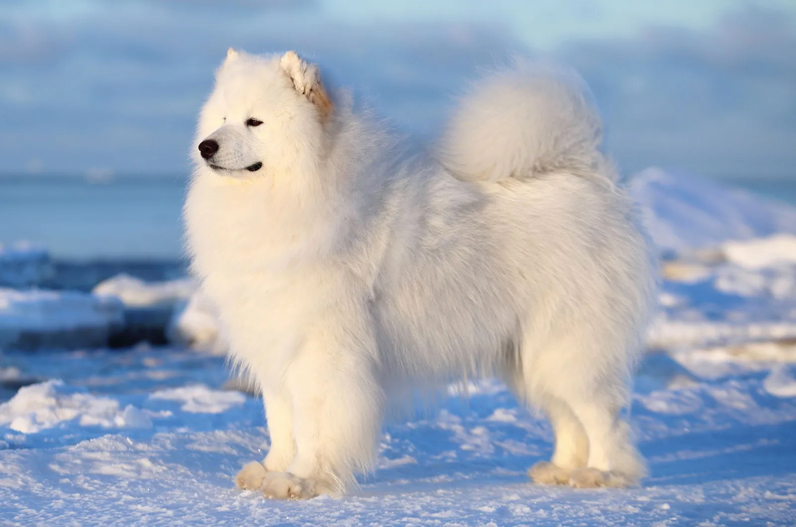
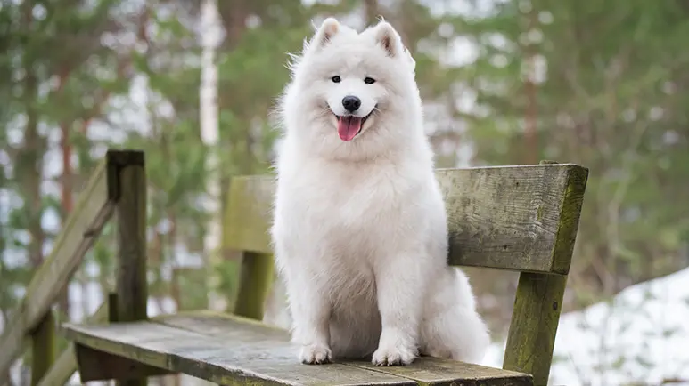
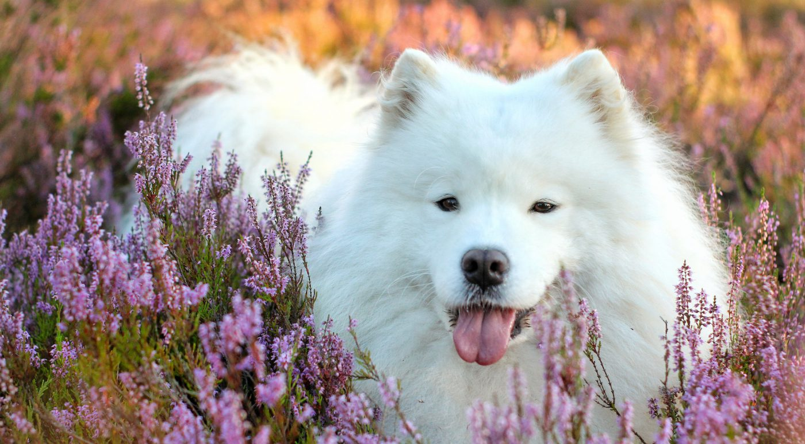
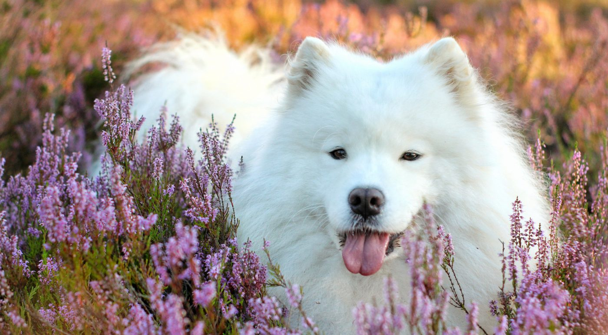

Pets
Samoyed

The Samoyed is a substantial but graceful dog standing anywhere from 19 to a bit over 23 inches at the shoulder. Powerful, tireless, with a thick all-white coat impervious to cold, Sammies are perfectly beautiful but highly functional. Even their most delightful feature, a perpetual smile, has a practical function: The upturned corners of the mouth keep Sammies from drooling, preventing icicles from forming on the face. A Sammy sentenced to solitary confinement in the yard is a miserable and destructive creature. These are smart, social, mischievous dogs who demand love and attention. Sammies need structure in training. Teach them what's expected of them early, and practice it with them often.
Samoyeds, the smiling sled dogs, were bred for hard work in the world's coldest locales. In the Siberian town of Oymyakon, for instance, temperatures of minus-60 degrees are common. The Sammy's famous white coat is thick enough to protect against such brutal conditions. Powerful, agile, tireless, impervious to cold, Sammies are drop-dead gorgeous but highly functional. Even their most delightful feature, a perpetual smile, has a practical function: The mouth's upturned corners keep Sammies from drooling, preventing icicles from forming on the face.
Photo Gallery
  

Likes
- Belly rubs
- Playing tug-of-war
- Sneaking onto the couch